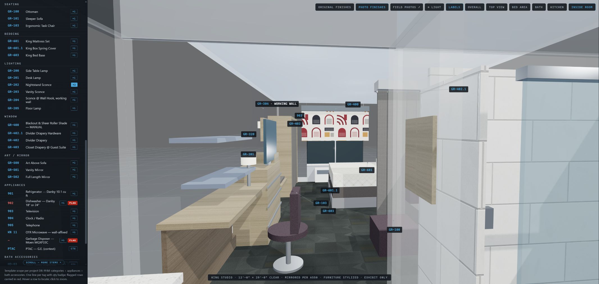

Every Item.
Its Source. Its Status.
A connected field platform for a 115-room hotel. See the space in 3D, find the evidence behind an item, and follow its installation record from the crew to the dashboard.
Actual project captures. Connected models. Traceable source context.
Home2 Suites · Eagle Pass, Texas
Built for the questions
that hold up the work.
“Where is that detail?”Keep the source beside the room and item.
“What is still missing?”Distinguish material, installation and issue states.
“Who checked this?”Carry initials and company through the record.
“Which room needs us next?”Turn line-item detail into a useful overview.
Follow the Work.
Nine chapters. One connected field workflow.
Chapter 1 of 9
Start With the Space.
Move from the connected first floor into a guest room or common area. Room links, progress shading, camera presets and layers give the work a location before you open a checklist.
Explore the guest wing, exterior and exploded views. Select a room to inspect its context.
Open this viewThe actual studio contains project review records. Explore its views without changing checkoffs. The practice workflow below is separate and fictional.
The Work Behind
the Interface.
A large project workspace became a structured set of rooms, items, documents and references. Those relationships carry context into each screen.
From Source Material to Field Records
The original construction database organizes 1,606 source items across 11 room types and expands them into 17,635 room-item rows for 115 rooms. Its sheet index contains 238 sheets. Quantities remain meaningful: two identical hooks can remain two checkable instances.
Room/type mappings, provenance, conflicts and missing information are retained alongside the source register. The public studio combines selected context with checklist records, geometry, materials and field photographs.
Original database scope, not a count of 3D objects. The public viewer links 16 first-floor room keys and a connected first-floor model.
Source registerItems, room types, sheets and provenance
Room-level contextQuantities, applicability and references
Field recordInitials, status, issues and responsibility
Useful views3D context, source library and reporting
A Tag Is the
Beginning of the Answer.
Follow one refrigerator from the room to its architectural detail and supplier reference. Keep the evidence visible with the item.
Room 104 · Refrigerator · Tag 901
The selected item keeps its tag and room context while you open the associated documents.
Traceability includes the review status. The public registry contains 32 document records and 902 reference links, including drawing details, photos and supplier references. Its 63 submittal links are marked “Approval status not verified.” A linked reference is not a claim of approval.
Move Through
the Actual Model.
Open the real Room 104 viewer, orbit the geometry and choose a labeled item. Explore the original project model and its linked source context.

Loads the public GitHub viewer on request.
Model placement and photo-informed finishes are illustrative. Source drawings control. Open the viewer in its own tab.
Put the Workflow
Through Its Paces.
Identify a sample crew member. Change an item’s condition, add a note and watch the summary respond. Print the result as a checklist.
Fictional practice · Room DEMO-A
Changes stay in this tab’s memory and reset on reload. No project database is connected.
Start the practice to update a field record.
Room DEMO-A · FF&E Checklist
Choose an item to add a note or inspect its history.
Built From the
Field Outward.
I defined the requirements and field workflows, directed the AI-assisted implementation with Claude Code and OpenAI Codex, configured integrations and checked the experience against field needs and source documents.
JavaScript, Firebase and Three.js connect the app, records and models. The design follows a practical path: find the space, understand the item, check its source, record the condition and make that record useful to the next person.
This was my first major project. Bringing the crew app, dashboard, drawings, photographs and 3D context into one experience is the part I am proudest of.
Explore Ironstack Home2 Studio